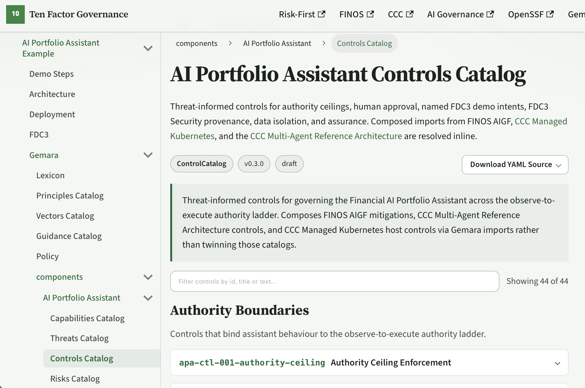

From the workshop
Poisoning
If the agent can be steered, you do not ask it to police itself.
JEV for policy
A cheaper model can check a dearer one. Governance does not need to be as clever as the thing it governs.

If the agent can be steered, you do not ask it to police itself.
A cheaper model can check a dearer one. Governance does not need to be as clever as the thing it governs.
